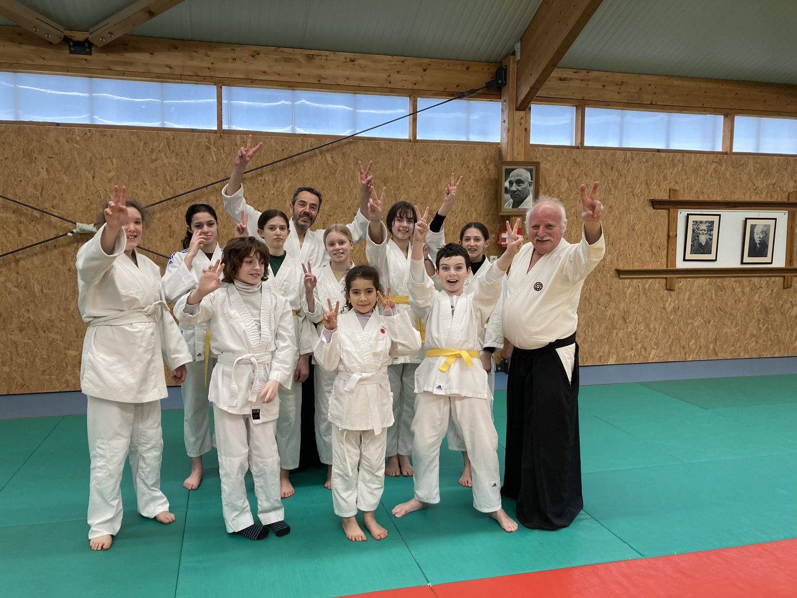
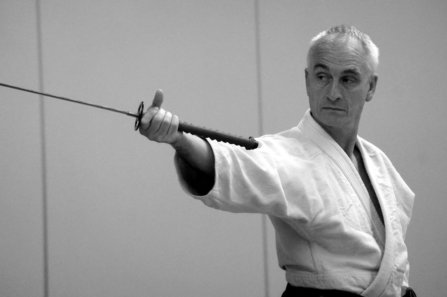
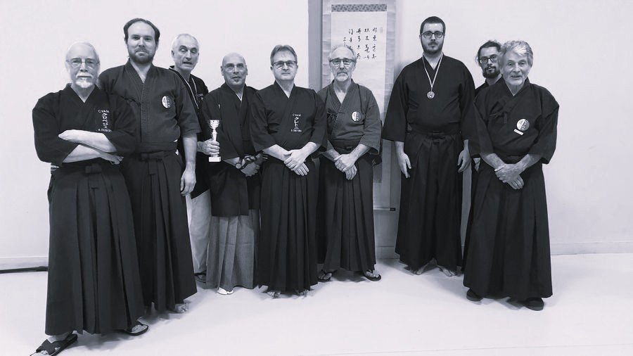
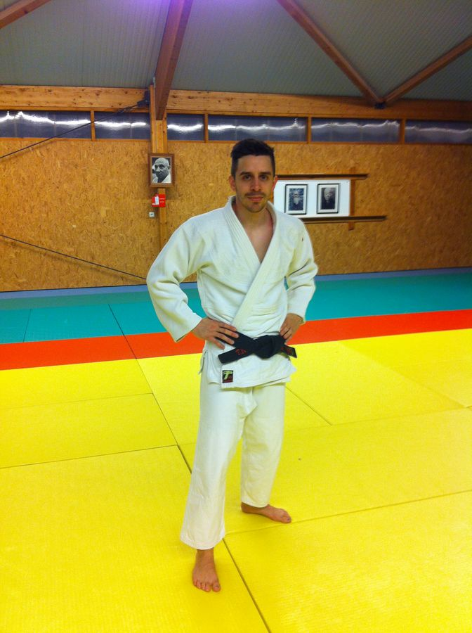
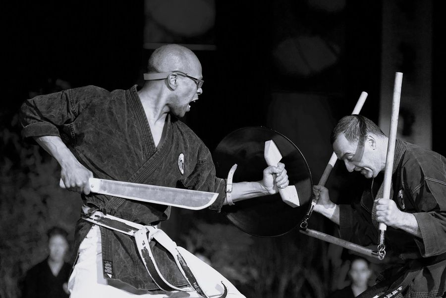
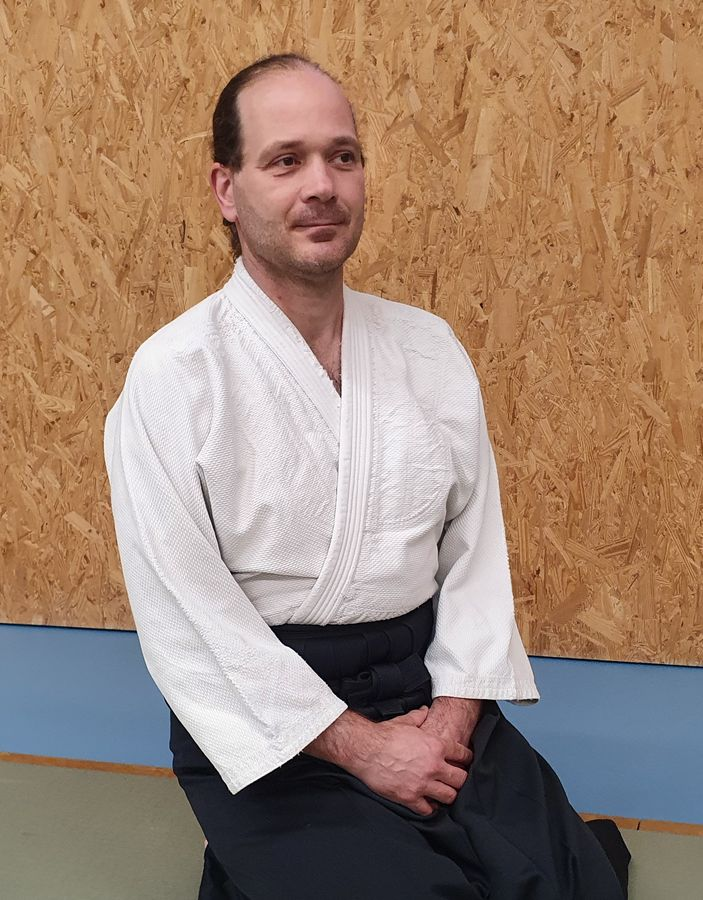
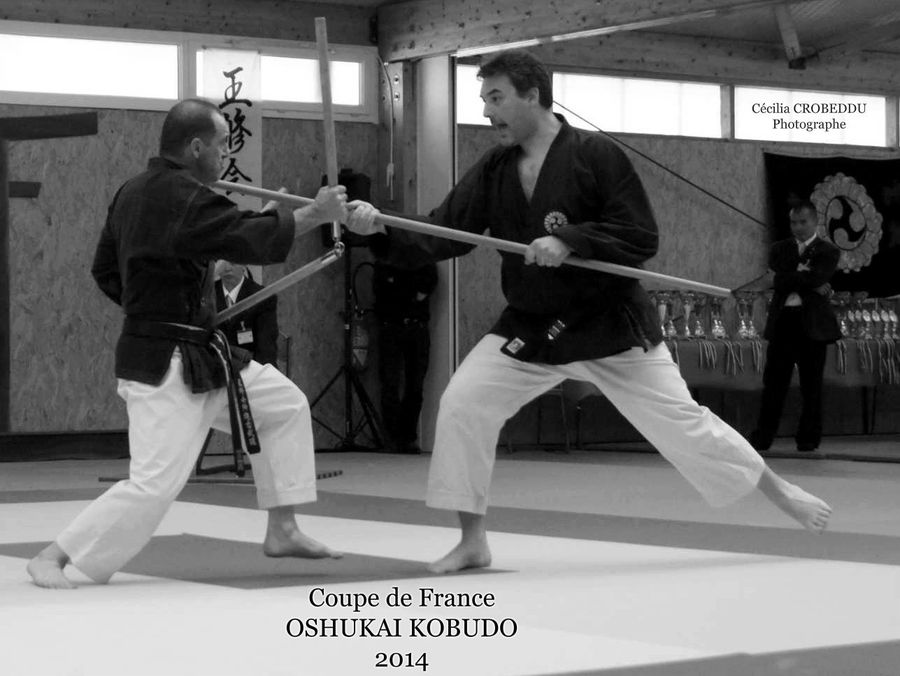

Depuis 1965, le CYAM transmet les arts martiaux japonais à Yerres — l'harmonie du corps et de l'esprit, la maîtrise de soi et l'aventure humaine au sein d'une équipe.

Au CYAM, les pratiquants apprennent des techniques harmonieuses au service de l'épanouissement, du bien-être et de l'expression du corps — une source d'énergie et d'extériorisation.
Ils apprennent aussi à donner du sens à leur pratique pour acquérir la maîtrise de soi. Le but n'est pas la performance seule, mais l'accomplissement, sur le plan mental, technique et physique, par un entraînement régulier.
« L'art guerrier est l'art de la paix : il faut gagner sans se battre. »
1965 : année de création de l'association « Judo Club Yerrois », à la suite du désir de plusieurs judokas habitant la commune de Yerres. En 1969, le club s'agrandit avec la création de la section Aïkido. En 1972, la création de la section Karaté vient diversifier un peu plus encore les disciplines proposées.
C'est en 1976 que le nom de Club Yerrois d'Arts Martiaux (C.Y.A.M.) est définitivement adopté. Dès lors, d'autres sections d'arts martiaux ont été créées : Ju-Jitsu (1981), Kyudo (1985 — dissoute en 1997), Kobudo (2001), Taïso (2003) et Iaïdo (2015).






L'adhésion en ligne pour la saison 2026/2027 ouvrira très prochainement. En attendant, contactez le club pour toute information.